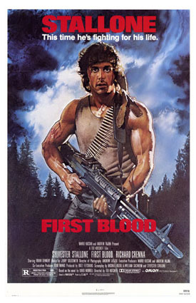

Rambo (1982)

Diretor: Ted Kotcheff
Atores Principais: Sylvester Stallone, Richard Crenna, Brian Dennehy e Bill McKinney
Gênero: Ação / Drama / Suspense
Censura: 14 anos
Duração: 93 minutos (1h 33min)
Sinopse
O veterano da Guerra do Vietnã, John Rambo, vaga pelas estradas dos Estados Unidos até ser injustamente detido e humilhado pelo xerife de uma pequena cidade. Gatilhos psicológicos do seu passado traumático são ativados, fazendo Rambo fugir para as montanhas florestais da região. Utilizando suas habilidades extremas de guerrilha e sobrevivência, ele inicia uma caçada brutal contra a polícia local e a Guarda Nacional.
← Voltar ao catálogo